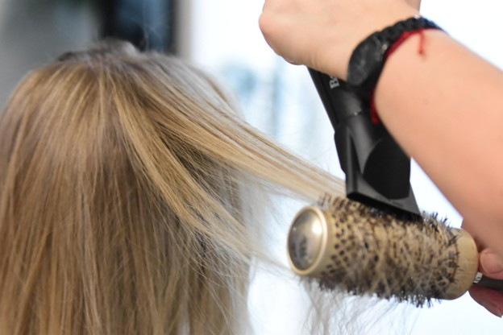

Welcome to the Yougonatural.com Blog: Your Ultimate Resource for Headwraps, Hair Wraps, and Hair Care Tips
At Yougonatural.com, we are more than just a store—we are a community dedicated to embracing natural beauty and promoting healthy hair care. Our blog is the perfect place to stay up to date with the latest trends, tips, and advice on headwraps, hair wraps, headbands, and overall hair care. Whether you're a curly-haired queen, a fan of chic turbans, or someone seeking hair accessories that prioritize hair health, we’ve got you covered.

The Importance of Hair Accessories in Your Hair Care Routine
Hair accessories are not just for styling—they play a crucial role in maintaining your hair’s health. From headwraps to hair wraps and headbands, these accessories provide protection, moisture retention, and even aid in preventing hair breakage. In this blog, we’ll explore how these accessories can become an essential part of your hair care regimen.
1. Protection and Moisture Retention with Hair Wraps:A major benefit of using hair wraps and headwraps is that they protect your hair from environmental stressors. Whether you’re shielding your hair from the sun, wind, or dust, these accessories help to maintain your hair’s natural moisture, which is especially important for textured or curly hair types. Satin and silk hair wraps are particularly beneficial as they help prevent moisture loss while reducing frizz.
Using hair wraps at night can also reduce friction that leads to hair breakage and split ends. This is why many people use satin or silk wraps before bed, as these fabrics are gentle on the hair and help retain the natural oils that your hair needs to stay healthy and shiny.
2. Comfortable and Stylish Headbands for Everyday Use:Headbands are a versatile accessory that can be worn for a variety of purposes—from keeping your hair in place during a workout to adding a stylish element to your outfit. Many headbands, like wide fabric headbands, are designed with comfort in mind, so you can wear them for hours without feeling tight or uncomfortable.
Headbands are also an excellent way to keep your hair off your face, especially during a hot day or when you’re engaging in activities that cause you to sweat. Plus, they come in an array of colors, fabrics, and styles, allowing you to express your personality while taking care of your hair.
The Benefits of Wearing Headwraps and Hair Wraps
In addition to looking fabulous, headwraps and hair wraps offer numerous benefits for your hair’s health. Here are just a few reasons why incorporating these accessories into your routine is a good idea:
1. Hair Health Protection:Wearing a headwrap or hair wrap helps protect your hair from excessive exposure to sunlight, which can cause dryness and fading, especially for dyed or natural hair. It also prevents the hair from rubbing against rough materials like cotton pillowcases, which can lead to breakage over time. For curly-haired individuals, headwraps provide an additional layer of protection that helps preserve curl patterns and prevent frizz.
2. Enhanced Styling Possibilities:One of the best things about headbands and hair wraps is the endless variety of styles and options available. Whether you’re going for a laid-back, casual vibe with a simple headband or you want to make a bold fashion statement with a brightly patterned headwrap, these accessories allow you to change up your look whenever you feel like it. You can even use headwraps for protective hairstyles, such as wrapping your hair after braiding or twisting it to keep the style intact.
3. Moisture Retention for Curly Hair:If you have curly hair, maintaining moisture is essential for keeping your curls healthy and defined. Satin and silk hair wraps are perfect for this because they prevent moisture loss and allow your curls to retain their natural oils. Wearing a headwrap or hair wrap overnight is a great way to ensure your curls stay hydrated, reducing the risk of breakage and frizz the next morning.
Choosing the Right Headwraps, Hair Wraps, and Headbands for Your Hair Care Needs
With so many options out there, it can be hard to know which headwraps, hair wraps, or headbands are best suited for your hair type and lifestyle. Here are some tips to help you make the right choice:
1. Consider Your Hair Type:Different hair types benefit from different materials and styles. If you have curly or coily hair, opt for satin or silk hair wraps, as these fabrics are gentle on your curls and help reduce frizz. For straight hair or thinner hair types, lightweight headbands or cotton hair wraps are great options. These materials allow for breathability while providing enough hold to keep your hair in place.
2. Pick the Right Fabric for Your Needs:When it comes to choosing the right fabric, consider both the look and functionality. Satin and silk are luxurious, smooth, and perfect for protecting hair, while cotton options are breathable and comfortable for everyday wear. For a fashion-forward look, patterned headwraps can be the perfect choice to add color and personality to your outfit.
3. Fit and Comfort Are Key:Headbands and hair wraps should fit snugly but not too tightly. When shopping for headbands, make sure the elastic or fabric allows flexibility and won’t leave marks on your head. For headwraps, ensure that the fabric is long enough to wrap around your hair and stay in place throughout the day without slipping or causing discomfort.
Popular Styles of Headwraps, Hair Wraps, and Headbands
At Yougonatural.com, we offer a range of headwraps, hair wraps, and headbands to suit every style and need. Here are some popular options:
1. Turban-Style Headwraps:Turban-style headwraps are perfect for those looking for a sophisticated, elegant look. Whether you're wearing one to a formal event or just want to add an extra flair to your everyday style, these wraps provide a stylish and functional solution. The fabric is designed to cover your entire head, keeping your hair neatly tucked away while adding a touch of glamour.
2. Boho-Chic Headbands:For a relaxed, bohemian look, boho-chic headbands are a go-to choice. These headbands often come in fabric options such as cotton, linen, or knit, and they can be worn casually or dressed up for more formal occasions. Boho headbands are perfect for keeping hair out of your face while offering a laid-back, free-spirited vibe.
3. Wide Fabric Hair Wraps:Wide fabric hair wraps provide more coverage and are great for protecting your hair during sleep, travel, or outdoor activities. Made from soft materials like satin or silk, these wraps ensure that your hair stays moisturized and frizz-free, especially for curly or textured hair.
Conclusion: Embrace Style and Hair Care with Headwraps and Hair Accessories
From protecting your hair to adding that finishing touch to your outfit, headwraps, hair wraps, and headbands are not just stylish—they’re essential for maintaining healthy hair. Incorporate these accessories into your daily routine to enjoy the benefits of moisture retention, frizz control, and hair protection, all while expressing your personal style.
We hope you find this blog post helpful as you explore the world of hair wraps, headbands, and headwraps. Stay tuned for more expert tips and updates right here on the Yougonatural.com blog. Don’t forget to check out our wide selection of headwraps and hair accessories to elevate your hair care routine today!